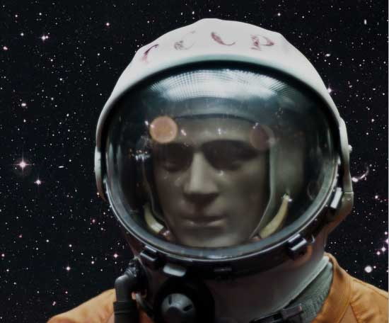
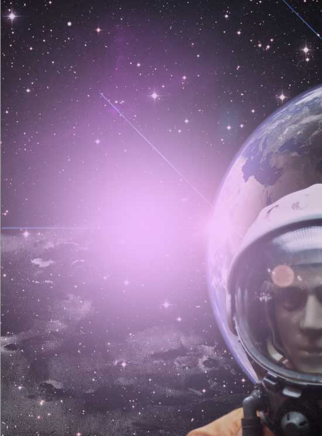

Preview
Step 1
Open up Adobe Photoshop and create a document with your desired poster dimensions. Remember to use a high DPI (between 150-300 dpi) and CMYK Color Mode if you are planning on sending your work to the press. For this tutorial, I created a document sized at 800x1200px, RGB Color at 72dpi for web use.
Step 2
To start, download and open the
Capodimonte Deep Field, use Free Transform (Ctrl/Cmd + T) to rotate and resize image so that it fits within our canvas.
Add Hue/Saturation adjustment layer (Layer > New Adjustment Layer > Hue/Saturation) and lower Saturation to -60 and Lightness to -15, to drop down colors a bit.
Step 3
Open
Astronaut photo in Photoshop, zoom in closely to the image and, with your Pen Tool (P), begin to trace around the astronaut, following its shape. We want to create a path that will allow us to clip out astronaut from background.
Once you have made your way around the astronaut, close your path to complete the outline. Control-click/right-click anywhere along your path to reveal a dropdown menu. From this menu choose Make Selection.

Copy and paste astrounaut in our canvas, scale it down and position using the image below as reference.
Go to Image > Adjustments > Hue/Saturation and make following adjustments:
Duplicate astrounaut layer (Cmd/Ctrl + J), apply Gaussian Blur filter with 1.4px Radius and lower the Opacity to 50%.

Step 4
Download the
Earth image and then open it in Photoshop. With the Elliptical Marquee Tool (M), make a selection around earth, copy it (Cmd/Ctrl + C) and then paste it (Cmd/Ctrl + V) into our design, scale it down and place it behind astronaut.
Drop down earth colors a bit by lowering Saturation to -40 (Image > Adjustments > Hue/Saturation).

Cmd/Ctrl + click on the thumbnail of earth layer to put a selection around it. Create a new layer and, on this new layer, fill the selection with black. Move the black circle towards the right, leaving just a portion of earth visible.
Apply the Gaussian Blur filter with Radius at 30px on the black circle layer. You can see that this technique gives our earth a nice shading effect, which in turn gives our work aspects of realism and accuracy.
At the end lower the Opacity of black circle layer to 80%.
Step 5
We're going to add a lens flare into our scene. Create a new layer, fill it with black (#000000), and then go to Filter > Render > Lens Flare. Change the Lens Type to Movie Prime and make sure the Brightness option is set to 100%.
Change the Blend Mode of the layer to Screen and position the lens flare so that it's right at the edge of the earth and in the middle of the planet glow.
Step 6
Grab free sample from
Vintage Clouds texture pack, import into our design, Desaturate (Cmd/Ctrl + Shift + U), scale it down and change the Blend Mode to Screen.
Adjust Levels (Image > Adjustment > Levels) to blend clouds perfect into our scene.
Next, we are going to add
The Red Rectangle Nebula; go ahead and download it and open it up in Photoshop.
Desaturate the image to remove its colors, import in our design, use Free Transform to resize it, and then position like on the image below.
Set the Blend Mode to Screen and apply Layer Mask (Layer > Layer Mask > Reveal All). Set the Foreground Color to black (#000000). Choose the Gradient Tool (G), select the Foreground to Transparent preset in the Gradient Editor, and draw a few gradients to soften (and mask out) edges of the nebula.
Choose #640775 for Foreground Color, pick up Brush Tool (B), and with large soft brush dub one spot over nebula.
Change the Blend Mode to Multiply and apply Clipping Mask (Layer > Create Clipping Mask (Cmd/Ctrl + Alt + G)). Duplicate this layer (Cmd/Ctrl + J) and set Blend Mode for duplicated layer Soft Light.
Download and open
Satellite image in Photoshop, extract from background using Pen Tool (P) and import in our design.
Open Layer Style by double clicking on layer, and add an Color Overlay effect.
Duplicate Satellite layer, give this layer Gaussian Blur with Radius set to 1.4px and set the Blend Mode to Soft Light and Opacity to 90%.
Step 7
Next, we are going to add a planet to our composition, which we're going to make from a texture. Download the
Rust Textures Pack, pick up the texture you like, I choosed Metal_V1_1109, then open it in Photoshop.
Draw a circular marquee using Elliptical Marquee Tool (hold down Shift to make a perfectly round circle) and copy into our composition.
Make it smaller using Free Transform Tool (Cmd/Ctrl + T),
create selection around (Cmd/Ctrl + click on layer thumbnail), go to Filter > Distort > Spherize and set the Amount to 100%. The distortion of the shape creates a three dimensional appearance to give the basic form of a planet.
Move the planet in the upper left corner, then begin adding some layer styles.
Create planet shadow using method explained in Step 4. Here's what we have now.
Let's brighten up the scene a bit. First, create a new layer. For your Foreground Color, choose a low-saturated pink color (#eebbfb). Use the Brush Tool (B) with a large, soft brush tip to create a spot,

apply the Gaussian Blur filter on this layer (Filter > Blur > Gaussian Blur) with Radius of 130px. Then just set the Opacity of this layer to 70% to soften and blend the effect into its background.
Create another new layer (Cmd/Ctrl + Shift + N), choose green color (#2cbe7e), and with Brush Tool and large soft brush dub one more spot but this time in the upper part of canvas.
Apply Gaussian Blur (Filter > Blur > Gaussian Blur) with Radius set to 150px and set Opacity of this layer to 50%.
Step 8
Press Cmd/Ctrl + A to Select All, then go to Edit > Copy Merged (Shift + Cmd/Ctrl + C) and paste the result into a new layer (name this layer "original"). Duplicate this layer ("original") twice and set the Blend Mode for the duplicated layers to Multiply.
Select the layer just above the "original" and then apply Filter > Stylize > Find Edges. Lower this layer's Opacity to 20% and change the Blend Mode to Overlay. Let's take a look (the layer on top is hidden).
Next, click on the other duplicated layer (which should be on top of the first duplicated layer). Go to Filter > Stylize > Glowing Edges and use the following settings:
- Edge Width: 2
- Edge Brightness: 8
- Smoothness: 10
Desaturate this layer by going to Image > Adjustments > Desaturate (Shift + Cmd/Ctrl + U).

Invert the layer's colors by pressing Cmd/Ctrl + I,
and finally set Opacity to 40%.
Go back to "original" layer and apply Noise filter (Filter > Noise) with Amount set to 20%, for Distribution choose Gaussian and make sure that Monochromatic is selected.
Change the Blend Mode to Soft Light.
Download and import
film texture, resize it to fit canvas and set Blend Mode to Linear Light and Opacity to 25%.
Step 9
It's time to add some text to our composition. You will need
League Gothic and
Deftone Stylus fonts, so in case you don't have it already go ahead download it and install. Let's start with first word "Journey".
Set Blend Mode to Soft Light, then duplicate layer, and for duplicated layer change Blend Mode to Overlay.
Use this method for all blocks of text.
Step 10
This is the final step of tutorial. First let's add an adjustment layer to give our entire composition the color theme we are going for. Go to Layer -> New Adjustment Layer -> Gradient Map to add an adjustment layer above all the other layers. Set a gradient going from #1c004b to #fa9900, then lower Opacity of adjustment layer to 40% to give our design a vintage feel.
We will finish this tutorial by adding border to our design. Select all layers in the Layers Panel into a layer group (Cmd/Ctrl + G) and name this group "poster". Go to Image > Canvas Size and expand canvas by 20px.
Download and open this
Handmade Paper stock image. Extract the paper from its background by using the Magic Wand Tool (W) to select the white color in its background and then inverting the selection by choosing Select > Inverse (Shift + Cmd/Ctrl + I).
Copy the paper and paste it into our design. Scale it to fit our canvas with Free Transform (Cmd/Ctrl + T). Move the paper layer below the "poster" layer group.
Using the Rectangular Marquee Tool (M), make a selection that is slightly smaller (15px) than the canvas.
With the "poster" layer group selected, go to Layer > Layer Mask > Reveal Selection.
Select paper layer again, go to Image > Adjustments > Hue/Saturation and set Saturation to -13 and Lightness to +34 to bring down paper color a bit and we are done!
{kind=link}
{kind=link}
{kind=link}